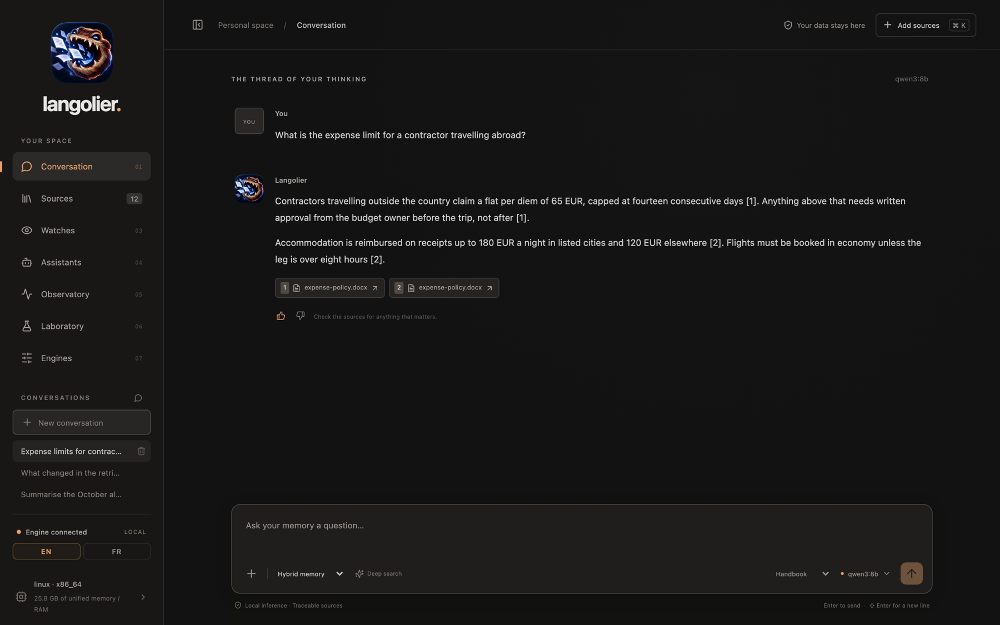
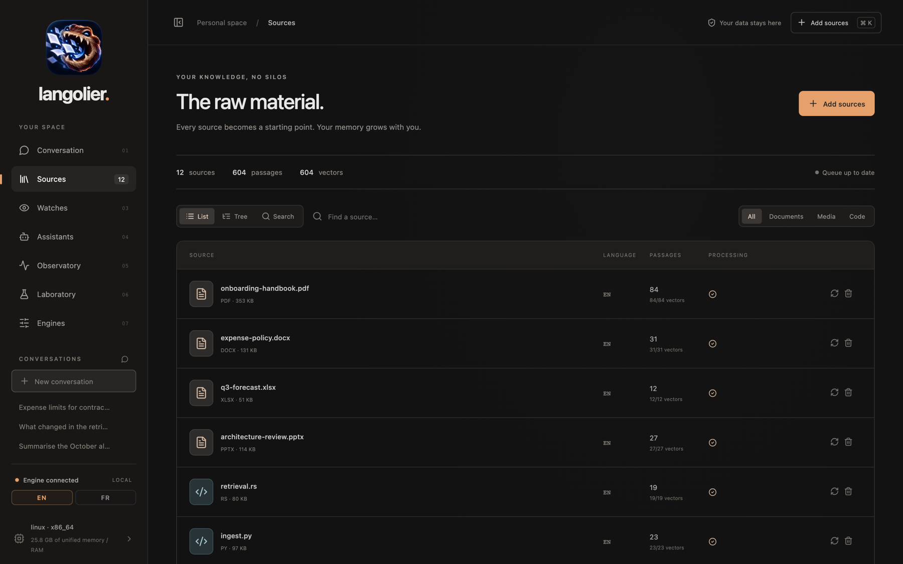
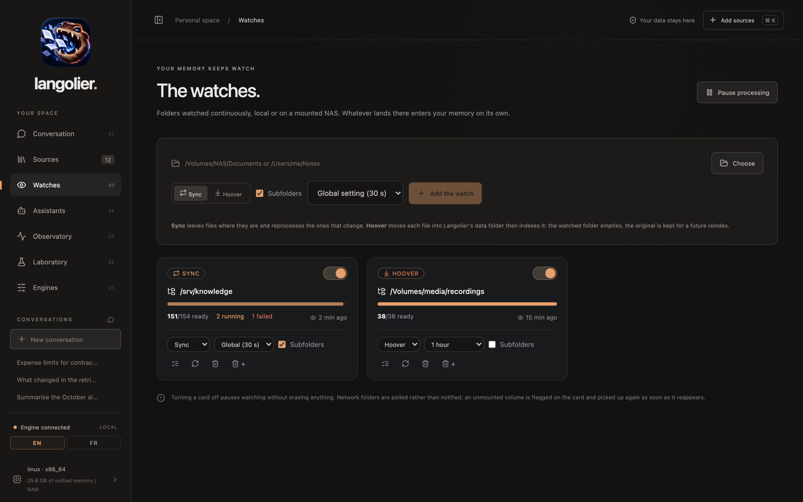
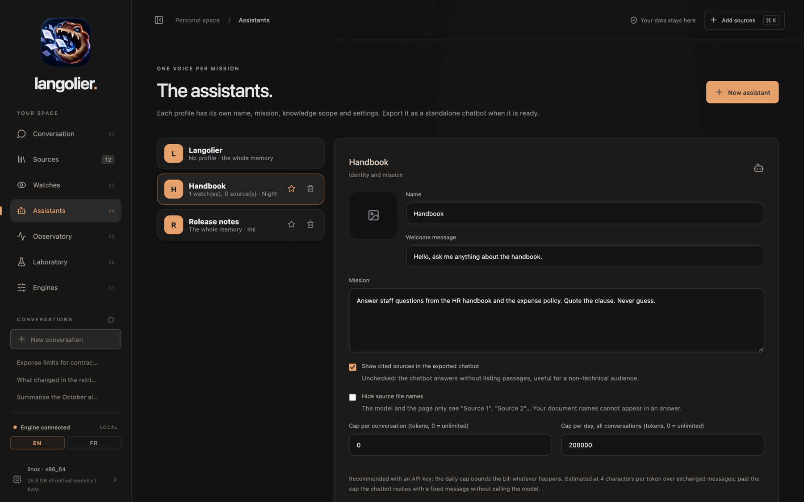
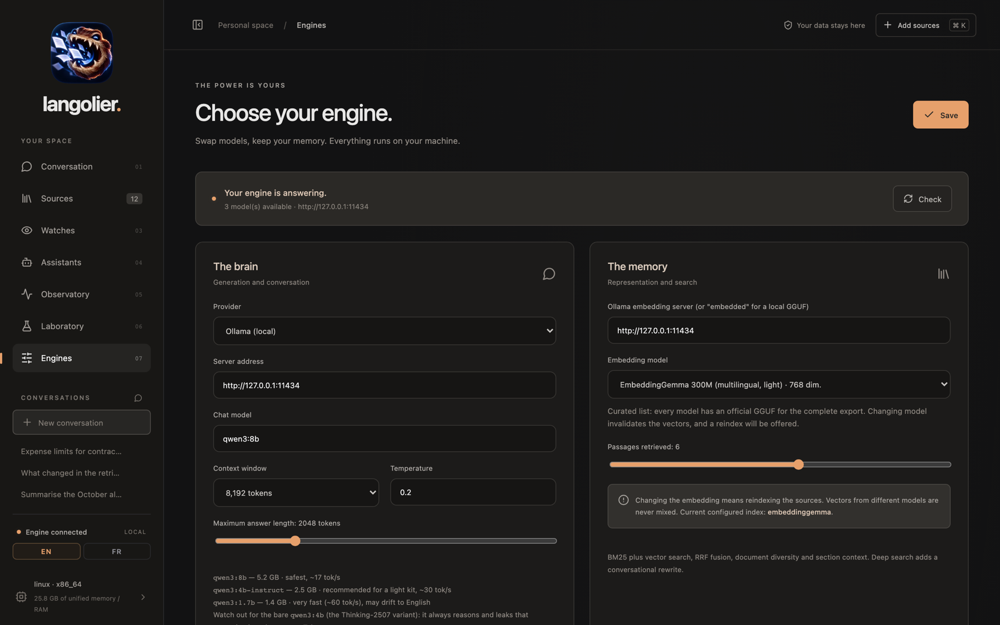
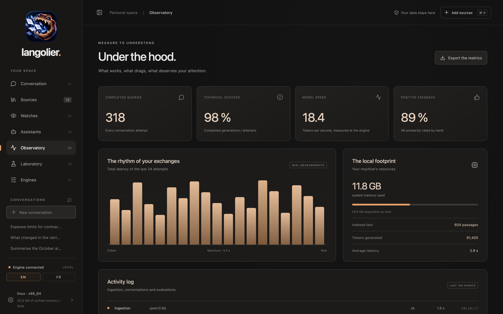

Your knowledge, no silos
Votre savoir, sans silos
Ask your own documents.
Interrogez vos propres documents.
A local knowledge studio. Feed it documents, code, videos and voice notes, ask questions, get answers with citations. Nothing leaves the machine unless you point it at a cloud API.
Un studio de connaissance local. Donnez-lui des documents, du code, des vidéos et des notes vocales, posez vos questions, obtenez des réponses avec leurs citations. Rien ne quitte la machine, sauf si vous le branchez sur une API distante.
What it does
Ce que ça fait
Langolier indexes what you already own and answers from it. Retrieval runs on SQLite: BM25 for words, vectors for meaning, fused with RRF, optionally reranked by a judge model. When nothing in the corpus supports an answer, it says so instead of inventing one.
Langolier indexe ce que vous possédez déjà et répond à partir de là. La recherche tourne sur SQLite : BM25 pour les mots, des vecteurs pour le sens, fusionnés par RRF, et si vous le voulez reclassés par un modèle juge. Quand rien dans le corpus ne soutient une réponse, il le dit au lieu d'inventer.
| Feature | Fonction | Detail | Détail |
|---|---|---|---|
| Ingest | Ingestion | PDF, DOCX, PPTX, XLSX, ODT, ODP, ODS, Markdown, text, CSV, JSON, notebooks, source files, subtitles | PDF, DOCX, PPTX, XLSX, ODT, ODP, ODS, Markdown, texte, CSV, JSON, carnets, fichiers source, sous-titres |
| Transcribe | Transcription | Video and audio through whisper.cpp, including voice memos | Vidéo et audio via whisper.cpp, mémos vocaux compris |
| Watch folders | Vigies | Local or mounted NAS paths, polled on a timer, sync or hoover mode | Dossiers locaux ou NAS monté, scrutés à intervalle, en mode sync ou aspirateur |
| Retrieve | Recherche | FTS5 BM25 and dense vectors, RRF fusion, optional LLM reranker, abstention thresholds | BM25 FTS5 et vecteurs denses, fusion RRF, reclassement LLM optionnel, seuils d'abstention |
| Ground | Ancrage | Strict mode answers only from retrieved passages, with inline citations | Le mode strict ne répond que depuis les passages retrouvés, citations à l'appui |
| Assistants | Assistants | Named profiles with their own mission, scope, engine, caps and theme | Des profils nommés avec leur mission, leur périmètre, leur moteur, leurs plafonds et leur thème |
| Export | Export | A .langolier bundle plus standalone launchers, updatable by dropping in a new bundle |
Un paquet .langolier et ses lanceurs autonomes, mis à jour en déposant un nouveau paquet |
| Bridge | Pont | Telegram long polling, no open port required | Telegram par interrogation longue, aucun port à ouvrir |
| Local API | API locale | One JSON endpoint on loopback, for Shortcuts, Siri and local agents | Un point d'entrée JSON en boucle locale, pour Raccourcis, Siri et les agents locaux |
A look around
Tour du propriétaire






Install
Installation
Grab a build from the releases page. macOS builds are ad hoc signed: on first launch, right click the app and pick Open.
Prenez une version sur la page des releases. Les versions macOS sont signées à la volée : au premier lancement, faites un clic droit sur l'app et choisissez Ouvrir.
| Platform | Plateforme | File | Fichier |
|---|---|---|---|
| macOS (Apple Silicon) | .dmg | ||
| Windows | .exe installer | installeur .exe | |
| Linux | .AppImage, .deb or .rpm | .AppImage, .deb ou .rpm |
Go to releases Aller aux releases
Build from source
Compiler depuis les sources
Requires the Tauri prerequisites, Rust stable, Node 20 or newer, and cmake for the embedded llama.cpp.
Nécessite les prérequis Tauri, Rust stable, Node 20 ou plus, et cmake pour le llama.cpp intégré.
git clone https://github.com/infinition/langolier.git cd langolier npm ci npm run tauri build
Assistants, watches, Telegram
Assistants, vigies, Telegram
Three things worth setting up once. The wiki walks through each of them in detail.
Trois choses à mettre en place une fois. Le wiki détaille chacune d'elles.
A profile answers in your place
Un profil répond à votre place
Give it a mission, a scope of sources, an engine and caps. Export it and you get a .langolier bundle with its launchers, ready to run on another machine. Drop a new bundle next to the launcher to update it: it is picked up in under thirty seconds, and conversations survive.
Donnez-lui une mission, un périmètre de sources, un moteur et des plafonds. Exportez-le et vous obtenez un paquet .langolier avec ses lanceurs, prêt à tourner sur une autre machine. Déposez un nouveau paquet à côté du lanceur pour le mettre à jour : il est repris en moins de trente secondes, et les conversations survivent.
Folders that feed themselves
Des dossiers qui se remplissent seuls
Point Langolier at a folder, local or on a mounted NAS. It is scanned on a timer you choose, and anything supported that lands there enters the memory on its own. Sync leaves the files where they are, hoover moves them in.
Désignez un dossier à Langolier, en local ou sur un NAS monté. Il est scruté à l'intervalle que vous choisissez, et tout fichier pris en charge qui y atterrit entre dans la mémoire tout seul. Le mode sync laisse les fichiers en place, le mode aspirateur les déplace.
Your assistant in a chat
Votre assistant dans une discussion
Create a bot with @BotFather, paste the token into the profile, test it, then export. The bridge uses long polling, so no port is opened and no domain is needed. One chat maps to one conversation, and /new starts another.
Créez un bot avec @BotFather, collez le jeton dans le profil, testez, puis exportez. Le pont utilise l'interrogation longue : aucun port ouvert, aucun domaine nécessaire. Une discussion correspond à une conversation, et /new en démarre une autre.
On Telegram. Caps and source privacy apply exactly as they do on the web page. Messages travel through Telegram's servers, so keep it to content that may go there.
À propos de Telegram. Les plafonds et la confidentialité des sources s'appliquent comme sur la page web. Les messages transitent par les serveurs de Telegram : réservez-le à du contenu qui peut y aller.
Ask from anywhere
Interroger depuis n'importe où
Langolier can answer over a local API. Switch it on under Engines, and Shortcuts, Siri or any local agent can query your memory. Loopback only, never the network, and a token is required.
Langolier peut répondre par une API locale. Activez-la dans Moteurs, et Raccourcis, Siri ou n'importe quel agent local peut interroger votre mémoire. Boucle locale uniquement, jamais le réseau, et un jeton est exigé.
- Under Engines > Local API, switch it on. A token is generated, copy it.
- Dans Moteurs > API locale, activez-la. Un jeton est généré, copiez-le.
- In the Shortcuts app, create a shortcut named Search my memory.
- Dans l'app Raccourcis, créez un raccourci nommé Cherche dans ma mémoire.
- Add Ask for input, then Get contents of URL pointing at the address below, method
POST, headerAuthorizationset toBearerplus your token, JSON body with aquestionfield. - Ajoutez Demander une entrée, puis Obtenir le contenu de l'URL vers l'adresse ci-dessous, méthode
POST, en-têteAuthorizationvalantBearersuivi de votre jeton, corps JSON avec un champquestion. - Finish with Get dictionary value for
textand Show result. For the spoken answer without the source list, readcontentinstead. - Terminez par Obtenir la valeur du dictionnaire pour
textet Afficher le résultat. Pour la réponse lue sans la liste des sources, prenezcontentà la place.
POST http://127.0.0.1:8787/api/ask
Authorization: Bearer <token>
{ "question": "..." }
→ { "content": "...", "text": "... + sources", "sources": [ ... ] }
What it is not. The API listens on 127.0.0.1 only, answers POST only, and refuses every request without the right token. Nothing is exposed to your network.
Ce que ce n'est pas. L'API n'écoute que sur 127.0.0.1, ne répond qu'en POST, et refuse toute requête sans le bon jeton. Rien n'est exposé à votre réseau.
Let something else do the writing
Laisser quelqu'un d'autre rédiger
/api/ask writes the answer, which takes a model, local or remote.
/api/search stops one step earlier: it returns the passages, ranked
and located, and lets whatever called it write. A shortcut can hand them to the
writer of its choice, an agent can read them as they are.
/api/ask rédige la réponse, ce qui demande un modèle, local ou distant.
/api/search s'arrête une étape plus tôt : il renvoie les passages,
classés et localisés, et laisse rédiger celui qui l'a appelé. Un raccourci peut les
confier au rédacteur de son choix, un agent peut les lire tels quels.
POST http://127.0.0.1:8787/api/search
Authorization: Bearer <token>
{ "question": "...", "mode": "lexical" }
→ { "sources": [ { "n": 1, "name": "...", "locator": "...", "text": "..." } ] }
What each mode needs. In lexical and exact, retrieval is pure SQLite: no model is involved, so nothing has to be installed and nothing is called. hybrid and semantic still turn your question into a vector, which needs the embedding engine, and the relevance judge uses a model when you leave it on.
Ce que chaque mode demande. En lexical et exact, la recherche est du pur SQLite : aucun modèle n'intervient, donc rien à installer et rien à appeler. Les modes hybrid et semantic transforment la question en vecteur, ce qui demande le moteur d'embeddings, et le juge de pertinence appelle un modèle si vous le laissez actif.
Where your data sits
Où vivent vos données
On your machine
Sur votre machine
Sources, passages, vectors and conversations live in one SQLite file in the application data folder. Original files stay where they are. Removing a source drops its passages and vectors from the index, not the file.
Sources, passages, vecteurs et conversations vivent dans un fichier SQLite du dossier de données de l'application. Les fichiers d'origine restent où ils sont. Retirer une source enlève ses passages et ses vecteurs de l'index, pas le fichier.
Unless you say otherwise
Sauf si vous en décidez autrement
With the embedded engine, nothing leaves the machine. Point the brain at a cloud provider and your questions and the retrieved passages go to it, which the interface states plainly next to the setting.
Avec le moteur intégré, rien ne quitte la machine. Branchez le cerveau sur un fournisseur distant et vos questions ainsi que les passages retrouvés lui sont envoyés, ce que l'interface indique clairement à côté du réglage.
Said plainly when unsure
Dit franchement en cas de doute
In strict mode, an answer with no supporting passage is refused rather than guessed. The abstention sentence is yours to write, and the observatory measures what actually happened, without simulated data.
En mode strict, une réponse sans passage à l'appui est refusée plutôt que devinée. La phrase d'abstention est la vôtre, et l'observatoire mesure ce qui s'est réellement passé, sans données simulées.